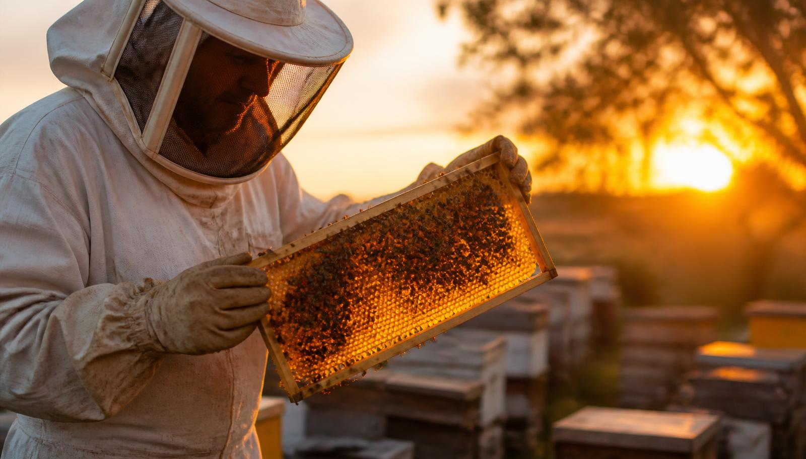
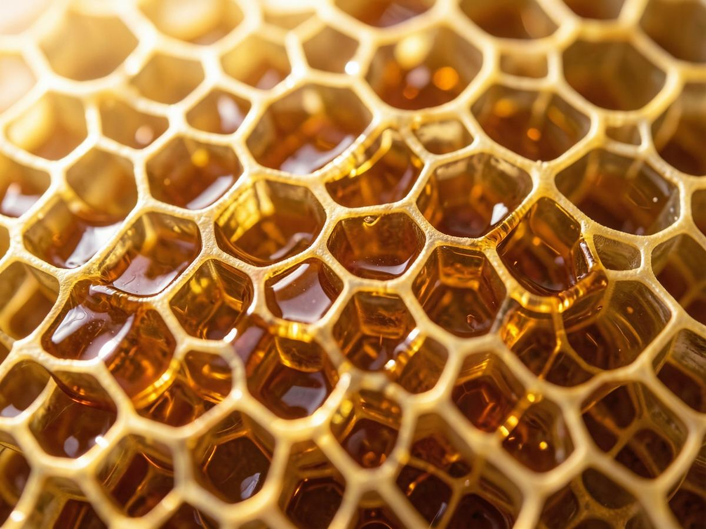
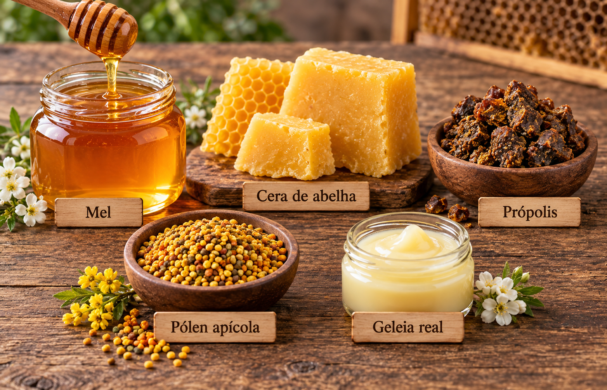
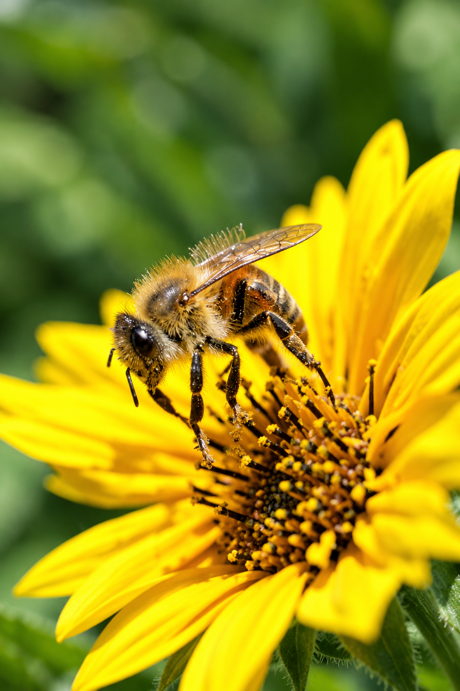
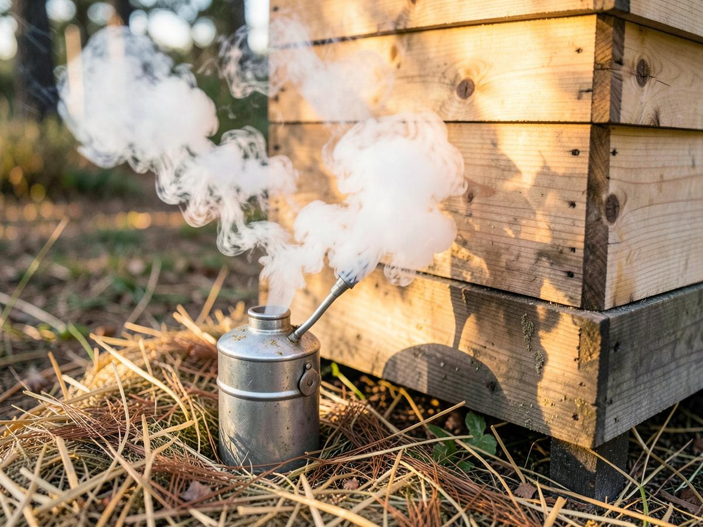
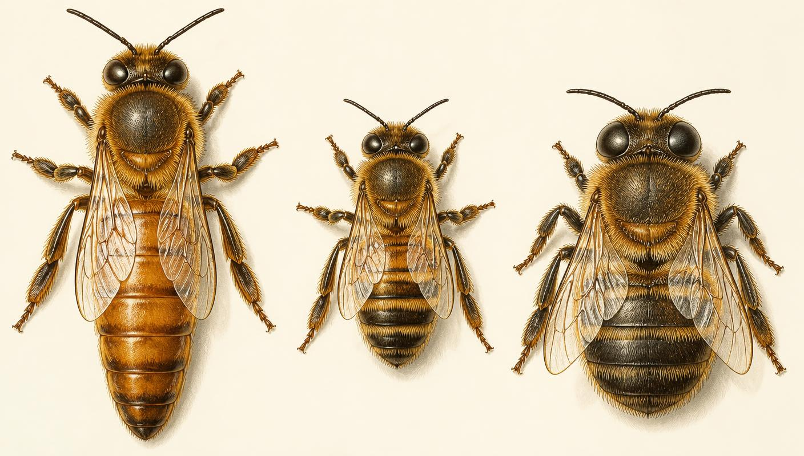
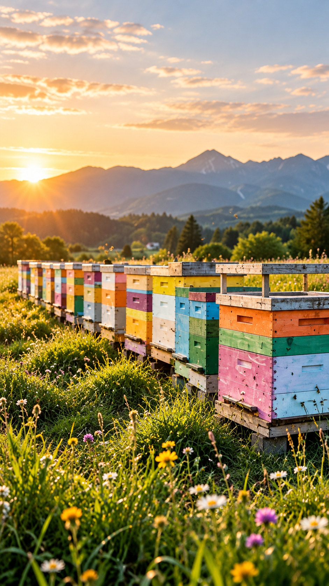
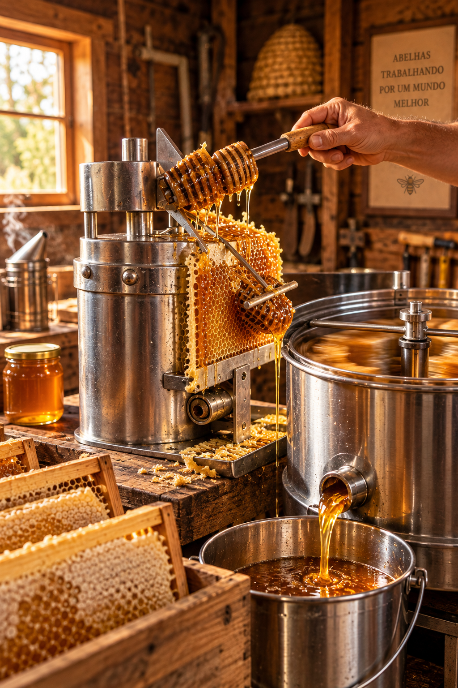

Um mergulho no mundo dourado das abelhas: história, biologia, manejo do apiário e a colheita do mel.
Capítulo um
A relação entre o ser humano e as abelhas é antiquíssima. Desde os primeiros tempos, o ser humano pôde observar e aproveitar os recursos oferecidos por esses pequenos insetos. Registros antigos, como pinturas rupestres encontradas na Cueva de la Araña, em Valência (Espanha), mostram uma figura humana pendurada em cordas retirando mel de um ninho selvagem, revelando que a coleta de mel já era praticada por povos antigos. Resíduos de cera encontrados em cerâmicas também demonstram que o mel e a cera de abelha eram utilizados desde tempos muito remotos. As datas atribuídas a esses achados pela cronologia arqueológica convencional ultrapassam 6 mil anos; dentro da cronologia criacionista adotada neste artigo, eles são compreendidos como registros das primeiras civilizações humanas, especialmente das populações que se desenvolveram após o Dilúvio.
No Egito Antigo, por volta de 2.400 a.C., a apicultura já era organizada: colmeias de tubos de barro empilhados eram transportadas de barco pelo Nilo, acompanhando a floração. A abelha era o símbolo do Baixo Egito e o mel servia como alimento, remédio, oferenda aos deuses e conservante no processo de mumificação. Gregos e romanos escreveram tratados: Aristóteles observou a vida da colmeia em sua História dos Animais, e Virgílio dedicou às abelhas todo o quarto livro das Geórgicas.
Durante a Idade Média, mosteiros europeus mantinham apiários em cestos de palha chamados sköp (ou "cortiços"), pois a cera era indispensável para as velas litúrgicas e o mel era praticamente o único adoçante disponível. O problema é que, para colher, era preciso destruir a colônia.
A grande virada veio em 1851, quando o pastor norte-americano Lorenzo Lorraine Langstroth descobriu o espaço-abelha e criou a colmeia de quadros móveis — a base da apicultura moderna, que permite inspecionar e colher sem matar as abelhas. Na sequência vieram o extrator centrífugo de Franz von Hruschka (1865), a cera alveolada de Johannes Mehring (1857) e o fumegador de fole de Moses Quinby (1873).
No Brasil, as primeiras abelhas europeias (Apis mellifera) chegaram em 1839, trazidas pelo padre Antônio Carneiro Aureliano ao Rio de Janeiro. Antes disso, os povos indígenas já praticavam a meliponicultura, a criação de abelhas nativas sem ferrão como jataí, uruçu e mandaçaia. Em 1956, o geneticista Warwick Kerr introduziu rainhas africanas (Apis mellifera scutellata) para pesquisa; o cruzamento acidental com as europeias originou a abelha africanizada, mais defensiva, porém extremamente produtiva e resistente. Hoje o Brasil é um dos dez maiores produtores mundiais de mel, com destaque para o mel orgânico do sertão nordestino.

Da colmeia para a mesa
A colmeia é uma pequena fábrica. Além do mel, ela entrega matéria-prima para alimentação, cosmética, saúde e indústria.

Néctar transformado e desidratado pelas abelhas. Utilidade: alimento energético de rápida absorção; adoçante natural; xarope caseiro para tosse e dor de garganta; cicatrizante de queimaduras leves (é antibacteriano e nunca estraga).
Produzida pelas glândulas cerígenas das operárias jovens. Utilidade: velas de alta qualidade, cera alveolada para novos quadros, cosméticos (batons, cremes, pomadas), impermeabilizantes e ceras para madeira e couro.
Resina vegetal misturada com cera e enzimas; é o "antibiótico" da colmeia. Utilidade: extratos e sprays para garganta, cicatrizantes, imunoestimulante, pastas de dente e conservante natural.
Grãos de pólen aglomerados com néctar nas "cestinhas" das pernas traseiras. Utilidade: suplemento alimentar riquíssimo em proteínas, vitaminas do complexo B e minerais; usado por atletas e na alimentação funcional.
Secreção das glândulas hipofaríngeas das nutrizes; alimento exclusivo da rainha. Utilidade: suplemento revitalizante, cosméticos antienvelhecimento e produtos de fortalecimento imunológico.
O veneno (apitoxina) é usado na apiterapia contra dores articulares, e o serviço de polinização alugado a fruticultores é hoje uma das rendas mais valiosas da apicultura profissional.

Sem abelha, sem prato cheio
Ao voar de flor em flor buscando néctar, a abelha carrega pólen no corpo peludo e realiza a polinização cruzada. Isso aumenta a produtividade, melhora o tamanho, o formato e a doçura dos frutos, eleva a taxa de germinação das sementes e mantém a diversidade genética das plantas silvestres.
Estima-se que a polinização por abelhas aumente a produção agrícola mundial em bilhões de dólares por ano — em culturas como a maçã e o melão, o ganho de produtividade pode passar de 50%. Por isso Einstein é frequentemente (e sem comprovação) citado dizendo que, sem abelhas, a humanidade duraria poucos anos: a frase talvez não seja dele, mas o alerta é real.
Curiosidade: a amêndoa é 100% dependente de abelhas. Na Califórnia, mais de um milhão de colmeias são transportadas de caminhão todos os anos só para polinizar os amendoais.
Fala de apicultor
Também chamadas de ninho ou câmara de cria: é a caixa inferior da colmeia, onde a rainha põe ovos e onde ficam as crias, o pólen e o mel de consumo da colônia.
Favo construído fora do alinhamento do quadro, ligando um quadro ao outro ou às paredes da caixa. Atrapalha a inspeção, quebra ao ser retirado e deve ser corrigido com cera alveolada e quadros bem espaçados.
Presença e multiplicação de pragas ou parasitas na colmeia — traça-da-cera, ácaro Varroa destructor, formigas, besouro-do-pequeno-colmeia, cupins — que enfraquecem ou destroem a colônia.
Caixa colocada acima do ninho, destinada exclusivamente ao armazenamento do mel excedente. É dela que o apicultor colhe, sem mexer nas crias.
Vão de 6 a 9 mm (média ~8 mm) que as abelhas deixam livre para circular. Menor que isso elas selam com própolis; maior, constroem favos.
Lâmina de cera pura com o desenho dos alvéolos impresso, fixada ao quadro para guiar a construção reta e rápida dos favos.
Divisão natural da colônia: a rainha velha parte com metade das abelhas para fundar outra casa, deixando realeiras para a nova rainha.
Entrada da colmeia, onde ficam as abelhas guardas. Pode ser reduzido para facilitar a defesa contra pilhagem e frio.
Ferramenta número um
É um recipiente metálico com fole que produz fumaça fria e branca, usado para acalmar as abelhas antes e durante o manejo. A fumaça mascara o feromônio de alarme liberado pelas guardas e faz as abelhas se encherem de mel — abelha de papo cheio fica dócil e menos propensa a ferroar.
Nunca use: plásticos, madeira tratada, papel colorido ou qualquer material com produtos químicos — a fumaça tóxica contamina o mel e mata as abelhas. A fumaça ideal é branca, densa e fria; se sair quente ou com faíscas, ela queima as asas das abelhas.

Uma sociedade perfeita
Uma colmeia forte abriga de 40 a 80 mil indivíduos divididos em três castas, cada uma com corpo e função distintos.

| Casta | Características físicas | Deveres | Vida |
|---|---|---|---|
| Rainha | A maior da colmeia; abdome longo e afilado que ultrapassa as asas; asas curtas em relação ao corpo; ferrão liso e curvo (pode ferroar várias vezes); não possui cestinhas de pólen nem glândulas de cera. | Única fêmea fértil: põe de 1.500 a 3.000 ovos por dia. Produz feromônios que dão coesão, identidade e ordem à colônia, inibindo o desenvolvimento dos ovários das operárias. | 2 a 5 anos |
| Operária | A menor e mais numerosa; fêmea estéril; corpo peludo; possui corbícula (cestinha de pólen) nas pernas traseiras, glândulas de cera no abdome e ferrão farpado (só ferroa uma vez e morre). | Faz tudo, seguindo a idade: limpeza dos alvéolos (dias 1–3), nutriz das larvas (4–12), produção de cera e construção dos favos (12–18), guarda do alvado e ventilação (18–21) e, por fim, campeira, buscando néctar, pólen, resina e água. | 45 dias no verão; até 6 meses no inverno |
| Zangão | Macho, mais robusto e atarracado que a operária; olhos compostos gigantes que se tocam no topo da cabeça; sem ferrão, sem corbícula e sem glândulas de cera; voo ruidoso. | Fecundar a rainha virgem em pleno voo nupcial — morre logo após o acasalamento. Também ajuda a manter a temperatura do ninho. Na escassez, é expulso da colmeia pelas operárias. | Cerca de 90 dias |
21
é o tempo de desenvolvimento de uma operária (rainha: 16 dias; zangão: 24 dias). A diferença é a alimentação: quem recebe geleia real durante toda a fase larval vira rainha.
1 kg
exige a visita a cerca de 4 milhões de flores e o equivalente a várias voltas ao mundo em quilometragem de voo. Uma operária produz apenas 1/12 de colher de chá em toda a vida.
8
Ao encontrar uma boa florada, a campeira executa uma dança em forma de oito que informa às companheiras a direção (em relação ao sol) e a distância da fonte.
Arquitetura de cera
Operárias com 12 a 18 dias de vida consomem grande quantidade de mel e, com as oito glândulas cerígenas do abdome, secretam pequenas escamas de cera transparente. Elas se penduram umas nas outras formando cachos (festões) e, com o calor do corpo (por volta de 35 °C), amassam as escamas com as mandíbulas e as modelam em alvéolos hexagonais construídos de cima para baixo.
O hexágono é escolhido porque preenche o espaço sem deixar vãos, resiste muito bem ao peso e gasta o mínimo de cera — e os alvéolos são levemente inclinados para cima para o mel não escorrer.
A colmeia segue um mapa muito previsível: no centro dos favos fica a área de cria, em forma de arco; ao redor dela, uma coroa de pólen; e acima e nas bordas, o mel operculado, que funciona como isolamento térmico e despensa. Os alvéolos de zangão são maiores e ficam nas bordas, e as realeiras (grandes, com aspecto de amendoim) aparecem nas bordas inferiores.
A cera nova é quase branca. A cada ciclo de cria, cada larva deixa dentro do alvéolo a sua exúvia (a pele trocada) e restos de casulo e de excrementos; some-se a isso o própolis, o pólen e o trânsito constante das abelhas. Camada sobre camada, o favo vai ficando amarelo, marrom e finalmente quase preto. Favos muito escuros acumulam patógenos e reduzem o tamanho das células — por isso devem ser trocados a cada 2 ou 3 anos.
Langstroth percebeu em 1851 que as abelhas respeitam um vão livre de 6 a 9 mm (cerca de 8 mm). Espaços menores são vedados com própolis; maiores são preenchidos com favos. Ao construir caixas em que todas as folgas ficam nessa medida, os quadros passaram a sair inteiros e limpos — nascia a colmeia de quadros móveis.
Se a rainha sobe, ela põe ovos nos favos de mel. O resultado: mel misturado com crias, pólen e casulos, favos escuros, colheita suja, mel de qualidade inferior e prejuízo às crias na hora da extração. Também dificulta o manejo, pois as melgueiras deixam de ser exclusivamente "despensa".
Com a tela excluidora de rainha — uma grade de arame ou plástico com aberturas de aproximadamente 4,2 mm, instalada entre o ninho e a primeira melgueira. As operárias, mais estreitas, passam livremente; a rainha (e os zangões) não. Vale também manter o ninho com espaço suficiente para a postura, para que ela não "procure" as melgueiras.

Escolhendo o lugar certo
Sanidade do apiário
Pilhagem é o ataque de abelhas de uma colônia (ou de vespas) a outra colmeia para roubar mel — comum em épocas de escassez de florada ou quando o apicultor deixa mel e favos expostos.
A abelha ladra chega voando de forma nervosa e hesitante diante do alvado, procurando frestas em vez de entrar direto; evita as guardas, luta com elas (deixando abelhas mortas na frente da colmeia), invade, enche o papo de mel e sai com o abdome inchado, voando pesado. Depois recruta companheiras, e o ataque cresce até destruir a colônia fraca. Sinais: brigas no alvado, zumbido agitado, cera roída no chão e abelhas brilhantes (perdem os pelos nas lutas).
Como evitar: reduza o alvado das colmeias fracas, nunca deixe mel ou favos expostos no apiário, faça revisões rápidas e de preferência no fim da tarde, mantenha colônias fortes e iguale a força entre elas.
Por que evitar? Pragas como a traça-da-cera destroem os favos, e o ácaro Varroa suga a hemolinfa das crias, transmite vírus, gera abelhas deformadas, reduz drasticamente a produção e pode levar a colônia à morte ou ao abandono da colmeia. Além disso, os prejuízos se espalham rapidamente para todo o apiário e o tratamento é sempre mais caro do que a prevenção.
Para que uma colônia atravesse bem o inverno, a chuva e o calor extremo, ela precisa de:
Curiosidade: no frio, as abelhas formam um cacho compacto e vibram os músculos do voo para gerar calor, revezando-se entre o centro quentinho e a superfície fria do cacho.
Equipamento
Padrão mundial, criada em 1851. Ninho com 10 quadros, melgueiras empilháveis, medidas padronizadas (46,2 × 37,0 cm de caixa) e tela excluidora. É a mais usada no Brasil.
Modelo brasileiro adaptado às abelhas africanizadas, com caixa de ninho maior e alvado alto, muito usada no Sul do país por facilitar o manejo de colônias defensivas.
A Dadant tem ninho grande e melgueiras rasas, favorecendo colônias populosas; a Layens é horizontal, sem empilhamento. Há ainda a Top Bar (barras superiores, sem quadros) e os antigos cortiços fixos.
O momento certo
O sinal definitivo é a operculação: quando as abelhas reduzem a umidade do néctar para cerca de 18–20%, elas selam cada alvéolo com uma tampinha de cera branca. Mel operculado é mel maduro, que não fermenta.
Nunca colha: mel verde (fermenta e azeda), nem todo o estoque da colmeia — deixe sempre reservas suficientes para a colônia, principalmente antes do período de escassez.

Mão na massa
Estas tarefas devem ser demonstradas na prática, sempre com equipamento de proteção completo: macacão com máscara, luvas, botas e o fumegador aceso.
Passe de 3 a 5 fios de arame inox tensionados nos furos laterais do quadro. Apoie a lâmina de cera alveolada sobre os arames, alinhada ao topo do quadro (encaixada no sulco da régua superior). Com um esporão/carretilha aquecido em água quente, percorra o arame de ponta a ponta: o arame quente afunda e cola na cera. Também é possível usar um transformador de baixa tensão (eletrificação do arame) ou pingar cera derretida na junção da lâmina com a régua superior. A cera deve ficar reta, esticada e sem ondulações — assim as abelhas constroem favos retos e não atravessados.
Cerca de 30 a 45 dias antes da florada principal, ofereça xarope estimulante de água e açúcar na proporção 1:1 (um litro de água para um quilo de açúcar, fervido e resfriado), em pequenas doses e com frequência — a colônia "entende" que há néctar entrando e a rainha aumenta a postura. Use alimentadores internos (tipo Boardman, de cobertura ou de quadro) para não provocar pilhagem, e alimente ao entardecer. Ofereça também substituto de pólen (torta proteica com levedura, farinha de soja e mel) para garantir proteína às nutrizes. Para reservas de inverno, use xarope mais grosso (2:1) ou cândi. Nunca alimente com açúcar durante a colheita, para não adulterar o mel.
Faça revisões periódicas, mantenha colônias fortes, elimine favos velhos e escuros, raspe própolis e cera das caixas, reduza o alvado nas épocas de escassez, proteja os cavaletes contra formigas (pés em latas com óleo ou água), mantenha o mato roçado ao redor das colmeias e armazene os quadros vazios em local ventilado, congelando-os por 48 horas antes de guardar para matar ovos de traça. Monitore a Varroa e nunca transfira quadros entre colmeias sem certeza sanitária.
Colha em dia seco e ensolarado, entre 9h e 15h. Aplique fumaça leve, retire as melgueiras usando escova de abelhas, escape-abelha ou soprador; leve-as fechadas até a casa do mel. Desopercule com faca/garfo desoperculador sobre a mesa desoperculadora (aproveitando o mel dos opérculos e guardando a cera para reciclagem), centrifugue os quadros no extrator, filtre o mel em peneiras, deixe decantar de 24 a 48 horas para separar espuma e bolhas, e envase em recipientes limpos e secos, identificados com data e florada. Devolva os quadros vazios às colmeias, para que as abelhas limpem e reutilizem os favos — economia enorme de cera e energia. Higiene rigorosa em tudo: mel absorve umidade e cheiros.
O método mais limpo é a tela coletora de própolis colocada sobre os quadros: as abelhas preenchem as frestas com resina e, depois de 30 a 60 dias, retira-se a tela, coloca-se no freezer por algumas horas e basta torcê-la ou flexioná-la para que o própolis se solte em pedaços puros. Também se pode raspar com o formão o própolis das bordas, tampas e cavaletes — nesse caso, colha em dias frios (o própolis endurece) e evite misturar farpas de madeira, tinta e cera. Guarde em vidro escuro bem fechado, em local fresco, longe da luz, sem contato com plástico comum. O própolis raspado ainda pode ser purificado por congelamento e peneiração antes de fazer o extrato alcoólico.
Para impressionar o clube
Arqueólogos encontraram potes de mel de mais de 3.000 anos em tumbas egípcias, ainda comestíveis. A baixa umidade e o pH ácido impedem qualquer micro-organismo de sobreviver.
A abelha tem dois olhos compostos e três ocelos no topo da cabeça. Ela enxerga ultravioleta e usa a luz polarizada do céu como bússola — mas não enxerga o vermelho.
É a frequência das asas que produz o zumbido característico. Voando, a abelha atinge cerca de 25 km/h.
O Brasil tem mais de 250 espécies nativas de meliponíneos, como jataí, uruçu e mandaçaia — inofensivas e ótimas para criar em quintais.
Em dias quentes, abelhas se posicionam no alvado batendo as asas e trazem água para resfriar o ninho por evaporação — um ar-condicionado natural.
Na hora de escolher uma nova casa, as batedoras "votam" dançando pelo local preferido, até que o enxame chegue a um consenso.
Menores de 1 ano não devem consumir mel pelo risco de botulismo infantil — o sistema digestivo ainda não neutraliza os esporos.
Cristalizar é sinal de mel puro. Basta aquecer o pote em banho-maria a menos de 45 °C para voltar a ficar líquido, sem perder as propriedades.
Parte espiritual
“Todos os caminhos do homem são puros aos seus olhos, mas o Senhor pesa o espírito.”Provérbios 16:2
“Palavras agradáveis são como favo de mel: doces para a alma e saúde para os ossos.”Provérbios 16:24
Assim como a abelha visita milhares de flores e transforma o néctar em algo doce, puro e curativo, o cristão é chamado a escolher com cuidado aquilo que fala. Provérbios 16:2 lembra que podemos achar que nossas palavras são inofensivas — “puras aos nossos olhos” — mas é Deus quem pesa a intenção do coração por trás delas. Já Provérbios 16:24 mostra o resultado das palavras que passam nesse teste: elas são doces para a alma, porque animam e consolam, e saúde para os ossos, porque curam por dentro, tal como o mel alimenta e cicatriza.
O mel é feito devagar, gota a gota, com trabalho, paciência e cooperação — e é armazenado para servir a toda a colônia. Do mesmo modo, palavras boas nascem de um coração cuidado, exigem domínio próprio e existem para edificar os outros. E vale a advertência: a mesma abelha que produz mel também possui ferrão. Nossa boca pode adoçar ou ferir. Que o apicultor aprendiz leve para a vida o que aprendeu no apiário — trabalho paciente, respeito, cuidado e doçura.